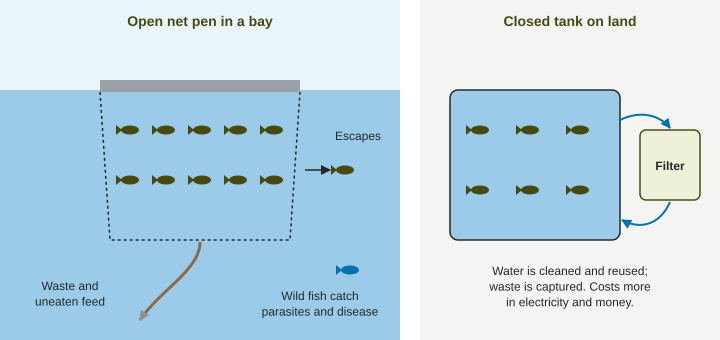

Wild fish catches stopped growing around 1990: most fisheries were already being fished as hard as they could stand, or harder. Since then, nearly all the growth in the world's fish supply has come from farming. This page covers aquaculture: what it is, what it does well, and the problems it brings.
What aquaculture is
Aquaculture is the farming of fish, shellfish and water plants. Carp and tilapia are raised in freshwater ponds, catfish and trout in tanks and raceways, salmon in net pens floating in sheltered bays, shrimp in coastal ponds, and mussels and oysters on ropes and racks in the sea. According to the UN Food and Agriculture Organization (FAO), in 2022 aquaculture produced 94.4 million metric tons of aquatic animals and wild fisheries 91.0 million, the first year farming passed wild catch. Most farmed fish come from Asia, led by China.
Benefits
- A lot of food on little space. A few hectares of ponds or pens can produce hundreds of metric tons of fish.
- Less pressure on wild stocks, when farmed fish replace wild-caught fish.
- Efficient protein. Fish are cold-blooded and supported by water, so they need less feed per kilogram of growth than cattle or pigs.
- Less fuel than fleets that travel far to fish, and no bycatch.
Costs

- Concentrated waste. Feces and uneaten feed from thousands of fish settle below open pens. Decomposers use oxygen breaking it down, so the bottom water can lose much of its oxygen, and the nutrients pollute the bay.
- Disease and parasites. Crowded fish get sick easily. Parasites such as sea lice multiply in pens and spread to wild fish swimming past, and farms use antibiotics and pesticides that reach the water.
- Escapes. Storms and torn nets release farmed fish, which compete with wild fish and may breed with them, weakening wild populations.
- Wild fish for feed. Carnivorous species like salmon and shrimp are fed fish meal and fish oil made partly from wild forage fish such as anchovies.
- Lost coastal forest. Coastal shrimp ponds have replaced large areas of mangrove forest, which protected coasts from storms and sheltered young wild fish.
Weighing the trade-offs
Whether a fish farm helps or harms depends on what is farmed and how. A pond of carp fed on plants takes pressure off the sea; a crowded salmon pen fed on wild anchovies may not. When you write about aquaculture, name the species and the system, then give a benefit and a cost with how each happens.
Doing it better
| Change | How it helps |
|---|---|
| Closed tanks on land with filters | capture waste, reuse water, no escapes, little disease spread; but cost more and use electricity |
| Plant-eating species (carp, tilapia) | eat plant-based feed, so no wild fish are used |
| Filter feeders (mussels, oysters) and seaweed | need no feed at all and remove nutrients from the water |
| Fewer fish per pen; pens in fast currents; rules on siting | dilute waste and reduce disease |
A farm grows 1,200 metric tons of salmon at about 1.3 kg of feed per kilogram of fish. Feed needed:
FAO, 2022: aquaculture 94.4 and wild capture 91.0 million metric tons. Share from farming: